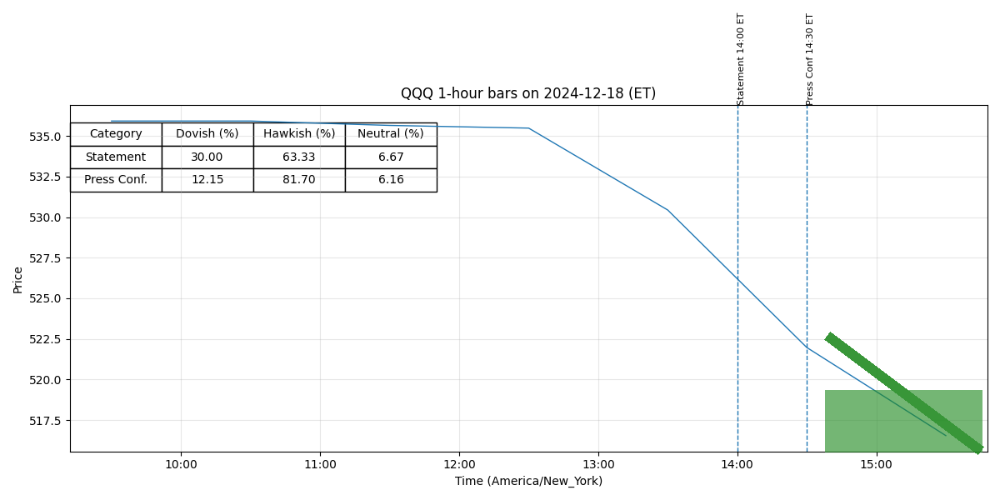

Comparison 20241218 vs 20250129
Legend: Interpretation of Colors and Intensities
- Dovish (green): easing, lower rates, accommodative policy.
- Neutral (yellow): balanced or data-dependent stance.
- Hawkish (red): tightening, higher rates, restrictive policy.
Color intensity = strength of stance (darker = stronger).
Purple highlight = newly added strong sentences.
Added / Changed Sentences
For release at 2:00 p.m. EST January 29, 2025
Recent indicators suggest that economic activity has continued to expand at a solid pace.
The unemployment rate has stabilized at a low level in recent months, and labor market
conditions remain solid.
Inflation remains somewhat elevated.
In support of its goals, the Committee decided to maintain the target range for the federal
funds rate at 4-1/4 to 4-1/2 percent.
In considering the extent and timing of additional
adjustments to the target range for the federal funds rate, the Committee will carefully assess
incoming data, the evolving outlook, and the balance of risks.
The Committee will continue
reducing its holdings of Treasury securities and agency debt and agency mortgage‑backed
securities.
The Committee is strongly committed to supporting maximum employment and
returning inflation to its 2 percent objective.
The Committee’s assessments will take
into account a wide range of information, including readings on labor market conditions,
(more)
-2-
inflation pressures and inflation expectations, and financial and international developments.
Voting for the monetary policy action were Jerome H. Powell, Chair; John C. Williams,
Vice Chair; Michael S. Barr; Michelle W. Bowman; Susan M. Collins; Lisa D. Cook; Austan D.
Goolsbee; Philip N. Jefferson; Adriana D. Kugler; Alberto G. Musalem; Jeffrey R. Schmid; and
Christopher J. Waller.
For release at 2:00 p.m. EST January 29, 2025
Decisions Regarding Monetary Policy Implementation
The Federal Reserve has made the following decisions to implement the monetary policy stance
announced by the Federal Open Market Committee in its statement on January 29, 2025:
• The Board of Governors of the Federal Reserve System voted unanimously to maintain the
interest rate paid on reserve balances at 4.4 percent, effective January 30, 2025.
• As part of its policy decision, the Federal Open Market Committee voted to direct the Open
Market Desk at the Federal Reserve Bank of New York, until instructed otherwise, to
execute transactions in the System Open Market Account in accordance with the following
domestic policy directive:
"Effective January 30, 2025, the Federal Open Market Committee directs the Desk to:
Conduct standing overnight repurchase agreement operations with a minimum bid
o
rate of 4.5 percent and with an aggregate operation limit of $500 billion.
Conduct standing overnight reverse repurchase agreement operations at an
o
offering rate of 4.25 percent and with a per-counterparty limit of $160 billion per
day.
Roll over at auction the amount of principal payments from the Federal Reserve's
o
holdings of Treasury securities maturing in each calendar month that exceeds a
cap of $25 billion per month.
Reinvest the amount of principal payments from the Federal Reserve's holdings of
o
agency debt and agency mortgage-backed securities (MBS) received in each
calendar month that exceeds a cap of $35 billion per month into Treasury
securities to roughly match the maturity composition of Treasury securities
outstanding.
Allow modest deviations from stated amounts for reinvestments, if needed for
o
operational reasons.
Engage in dollar roll and coupon swap transactions as necessary to facilitate
o
settlement of the Federal Reserve's agency MBS transactions.""
• In a related action, the Board of Governors of the Federal Reserve System voted
unanimously to approve the establishment of the primary credit rate at the existing level
of 4.5 percent.
(more)
-2-
This information will be updated as appropriate to reflect decisions of the Federal Open Market
Committee or the Board of Governors regarding details of the Federal Reserve's operational tools
and approach used to implement monetary policy.
20241218

20250129